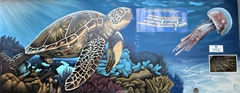
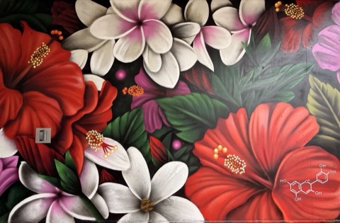
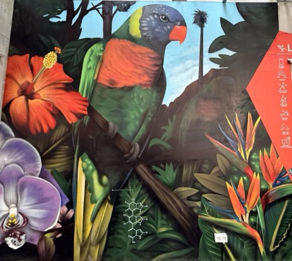

Festival Kaledoscope · UNC
Empreintes
Micro-Mondes : trajectoires du vivant
Les fresques de Kuby Kolor cachent la mémoire invisible des espèces calédoniennes. Deviens collecteur de mémoire et sauve-la, une Empreinte à la fois.
Comment jouer
- 1Vise une fresque
Place-toi à 2 ou 3 mètres, l'œuvre entière dans l'écran.
- 2Elle prend vie
Le personnage de la fresque sort de la peinture.
- 3Attrape l'Empreinte
Dirige-le avec le joystick jusqu'à la molécule qui brille. Elle flotte devant la fresque.
- 4Complète ton Atlas
Réunis toutes les Empreintes pour découvrir le message final.
Les fresques du parcours

Les Architectes du RécifLa tortue · Kératine
La Chimie des CouleursLe papillon · Cyanidine
Le Langage des PlumesL'oiseau · Mélanine
📷 Autorise la caméra · 📶 Internet nécessaire · 🔊 Monte le son